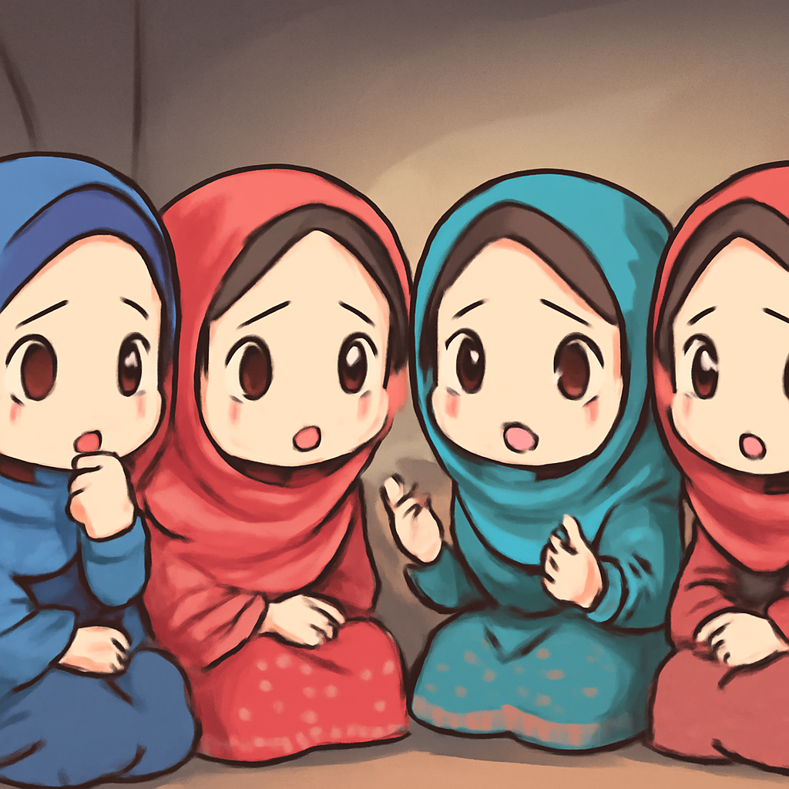
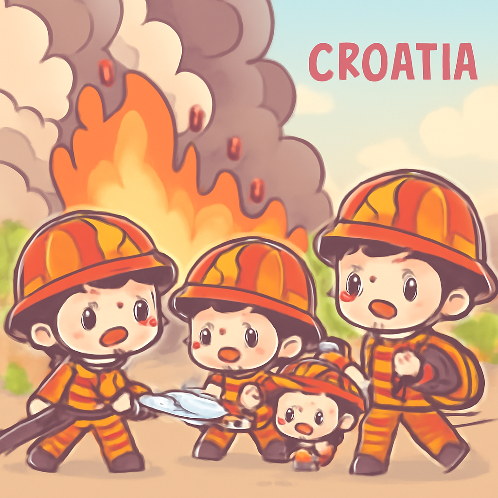

其一 · 阿富汗 · 塔利班統治下女性生活變樣
阿富汗女性分享五年來的生活變遷

在阿富汗，女性們描述了塔利班統治下的生活完全變樣，公共鞭刑、失業和醫療障礙讓她們的日子如同噩夢。這不僅影響了她們的生活質量，還凸顯了塔利班對女性人權的嚴重侵犯，令人擔憂未來的局勢會不會更加惡化。希望她們能早日看到光明的未來。
🔗 原始新聞 ↗
2026-08-15 · 以古觀今，以笑抗愁
阿富汗女性分享五年來的生活變遷

在阿富汗，女性們描述了塔利班統治下的生活完全變樣，公共鞭刑、失業和醫療障礙讓她們的日子如同噩夢。這不僅影響了她們的生活質量，還凸顯了塔利班對女性人權的嚴重侵犯，令人擔憂未來的局勢會不會更加惡化。希望她們能早日看到光明的未來。
🔗 原始新聞 ↗
日本遭遇前所未有的暴雨，影響民生
近期，日本因暴雨造成八人喪生，二萬多戶停電，七千人被困東京成田機場。這場暴風雨的威力不容小覷，基礎設施也面臨嚴峻考驗。希望這些天氣變化不會成為常態，否則我們可能要開始學習如何在水中游泳了。
🔗 原始新聞 ↗
克羅埃西亞的野火成為歷史上最嚴重之一

克羅埃西亞的奧米什附近野火肆虐，造成數十人受傷，數千人被迫撤離。這場火災被譽為歷史上最嚴重之一，當地政府面臨巨大的救災壓力。希望這場火災能快點被撲滅，讓人們能夠重返平靜的生活。
🔗 原始新聞 ↗
俄羅斯試圖破壞摩爾多瓦的親西方政府
俄羅斯被指控試圖透過金錢和干涉，破壞摩爾多瓦的親西方政府。他們甚至設立訓練營進行選舉干預，顯示出國際局勢的緊張與複雜。這不僅影響摩爾多瓦的未來，也可能改變整個東歐的政治格局。
🔗 原始新聞 ↗
美國航母林肯號遭遇供應短缺問題
美國航空母艦林肯號目前正在面臨供應短缺的問題，數千名水手的生活條件堪憂，甚至有人考慮跳海。這不僅影響了軍事運作，也引發人們對軍艦內部生活環境的關注。希望他們能快點得到支援，而不是考慮跳海！
🔗 原始新聞 ↗